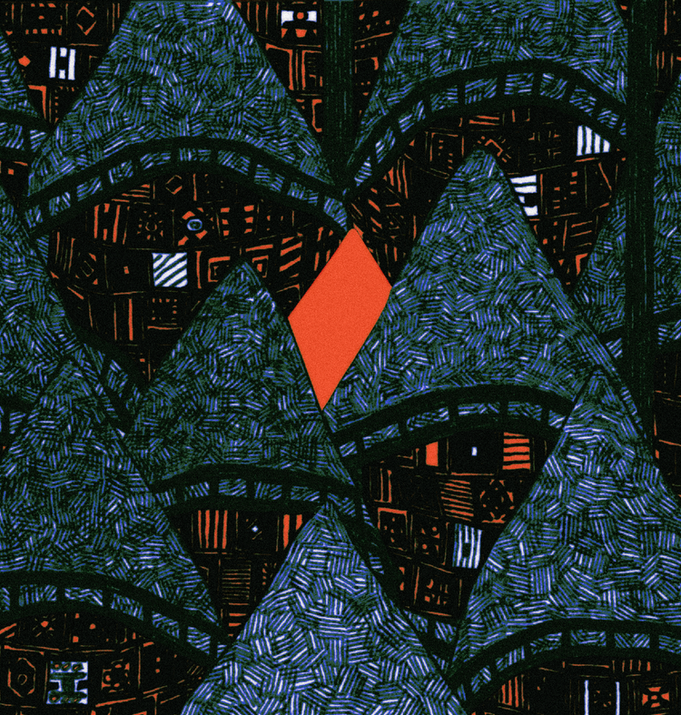

04



BAMEUI AKDANG
이 사람은 정말로 찾기 힘들었다. 그에 대해서는 침묵했었다. 그가 여러차레
모습을 바꾸었기 때문에, 나도 여러 방법으로 그의 경로를 찾아내야 했다. 가장
처음 봤던 모습의 성격과 가장 마지막으로 봤던 얼굴을 가져왔다.
L'Impossible 을 작업하던 당시에, 이것을 그리던 날 전날 밤 악몽을
꾸었다. 그 날의 악몽은 여전히 작용한다. 그런 꿈을 다시는 꾸고 싶지 않은데,
그 날 모든 것이 변했다.
-
This one was really hard to figure out. I've been quiet about them. Since they've altered their appearance many times, I had to discover their roots using many methods. I brought the first and the last appearances for them ; The personality and the face. During the session L'Impossible, I had a nightmare the night before I drew this page. The dream is still functional for me. I truly don't want to have a dream like that anymore, but the day changed everything after all.
-
This one was really hard to figure out. I've been quiet about them. Since they've altered their appearance many times, I had to discover their roots using many methods. I brought the first and the last appearances for them ; The personality and the face. During the session L'Impossible, I had a nightmare the night before I drew this page. The dream is still functional for me. I truly don't want to have a dream like that anymore, but the day changed everything after all.
밤의 악당
The One, 071626-071626, L’Impossible
The One, 071626-071626, L’Impossible

ⓒ 2026 피플즈 PEOPLES All Rights Reserved.